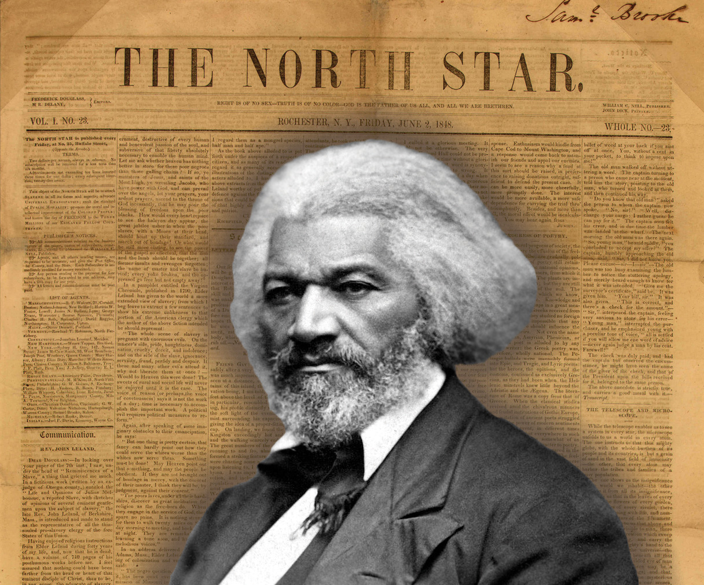

After reading this section, you should be able to answer the following questions:
The foundation of civil liberties is the Bill of RightsThe first ten amendments to the Constitution, adopted in 1789 and ratified in 1791., the ten amendments added to the Constitution in 1791 to restrict what the national government may do.
The state conventions that ratified the Constitution obtained promises that the new Congress would consider adding a Bill of Rights. James Madison—the key figure in the Constitutional Convention and an exponent of the Constitution’s logic in the Federalist papers—was elected to the first House of Representatives. Keeping a campaign promise, he surveyed suggestions from state-ratifying conventions and zeroed in on those most often recommended. He wrote the amendments not just as goals to pursue but as commands telling the national government what it must do or what it cannot do. Congress passed twelve amendments, but the Bill of Rights shrank to ten when the first two (concerning congressional apportionment and pay) were not ratified by the necessary nine states.
The Bill of Rights
View the Bill of Rights online at http://www.archives.gov/exhibits/charters/bill_of_rights.html.
The first eight amendments that were adopted address particular rights. The Ninth Amendment addressed the concern that listing some rights might undercut unspoken natural rights that preceded government. It states that the Bill of Rights does not “deny or disparage others retained by the people.” This allows for unnamed rights, such as the right to travel between states, to be recognized. We discussed the Tenth Amendment in Chapter 3 "Federalism", as it has more to do with states’ rights than individual rights.
Even before the addition of the Bill of Rights, the Constitution did not ignore civil liberties entirely. It states that Congress cannot restrict one’s right to request a writ of habeas corpusA writ issued by a judge asking the government for the reasons for a person’s arrest; the Constitution protects an individual’s right to ask for such a writ. giving the reasons for one’s arrest. It bars Congress and the states from enacting bills of attainderLaws prohibited by the Constitution that punish a named individual without judicial proceedings. (laws punishing a named person without trial) or ex post facto lawsLaws prohibited by the Constitution that retroactively make a legal act a crime. (laws retrospectively making actions illegal). It specifies that persons accused by the national government of a crime have a right to trial by jury in the state where the offense is alleged to have occurred and that national and state officials cannot be subjected to a “religious test,” such as swearing allegiance to a particular denomination.
The Bill of Rights contains the bulk of civil liberties. Unlike the Constitution, with its emphasis on powers and structures, the Bill of Rights speaks of “the people,” and it outlines the rights that are central to individual freedom.This section draws on Robert A. Goldwin, From Parchment to Power (Washington, DC: American Enterprise Institute, 1997).
The main amendments fall into several broad categories of protection:
Congress and the executive have relied on the Bill of Rights to craft public policies, often after public debate in newspapers.This theme is developed in Michael Kent Curtis, Free Speech, “The People’s Darling Privilege”: Struggles for Freedom of Expression in American History (Durham, NC: Duke University Press, 2000). Civil liberties expanded as federal activities grew.
Figure 4.1 Frederick Douglass and the North Star
The ex-slave Frederick Douglass, like many prominent abolitionists, published a newspaper. Much of the early debate over civil liberties in the United States revolved around the ability to suppress such radical statements.
The first big dispute over civil liberties erupted when Congress passed the Sedition Act in 1798, amid tension with revolutionary France. The act made false and malicious criticisms of the government—including Federalist president John Adams and Congress—a crime. While printers could not be stopped from publishing, because of freedom of the press, they could be punished after publication. The Adams administration and Federalist judges used the act to threaten with arrest and imprisonment many Republican editors who opposed them. Republicans argued that freedom of the press, before or after publication, was crucial to giving the people the information they required in a republic. The Sedition Act was a key issue in the 1800 presidential election, which was won by the Republican Thomas Jefferson over Adams; the act expired at the end of Adams’s term.See James Morton Smith, Freedom’s Fetters: The Alien and Sedition Laws and American Civil Liberties (Ithaca, NY: Cornell University Press, 1956). For how the reaction to the Sedition Act produced a broader understanding of freedom of the press than the Bill of Rights intended, see Leonard W. Levy, Emergence of a Free Press (New York: Oxford University Press, 1985).
Debates over slavery also expanded civil liberties. By the mid-1830s, Northerners were publishing newspapers favoring slavery’s abolition. President Andrew Jackson proposed stopping the US Post Office from mailing such “incendiary publications” to the South. Congress, saying it had no power to restrain the press, rejected his idea. Southerners asked Northern state officials to suppress abolitionist newspapers, but they did not comply.Michael Kent Curtis, Free Speech, “The People’s Darling Privilege”: Struggles for Freedom of Expression in American History (Durham, NC: Duke University Press, 2000), especially chaps. 6–8, quote at 189.
As the federal government’s power grew, so too did concerns about civil liberties. When the United States entered the First World War in 1917, the government jailed many radicals and opponents of the war. Persecution of dissent caused Progressive reformers to found the American Civil Liberties Union (ACLU) in 1920. Today, the ACLU pursues civil liberties for both powerless and powerful litigants across the political spectrum. While it is often deemed a liberal group, it has defended reactionary organizations, such as the American Nazi Party and the Ku Klux Klan, and has joined powerful lobbies in opposing campaign finance reform as a restriction of speech.
In Chapter 5 "Civil Rights", we discuss the Fourteenth Amendment, added to the Constitution in 1868, and how its due process clauseSection of the Fifth Amendment that prohibits the federal government from depriving individuals of “life, liberty or property without due process of law.”, which bars states from depriving persons of “life, liberty, or property, without due process of law,” is the basis of civil rights. The Fourteenth Amendment is crucial to civil liberties, too. The Bill of Rights restricts only the national government; the Fourteenth Amendment allows the Supreme Court to extend the Bill of Rights to the states.
The Supreme Court exercised its new power gradually. The Court followed selective incorporationSupreme Court’s application of the protections of the Bill of Rights one by one to the states after it has decided that each is “incorporated” into (inherent in) the Fourteenth Amendment’s protection of liberty against state actions.: for the Bill of Rights to extend to the states, the justices had to find that the state law violated a principle of liberty and justice that is fundamental to the inalienable rights of a citizen. Table 4.1 "The Supreme Court’s Extension of the Bill of Rights to the States" shows the years when many protections of the Bill of Rights were applied by the Supreme Court to the states; some have never been extended at all.
Table 4.1 The Supreme Court’s Extension of the Bill of Rights to the States
| Date | Amendment | Right | Case |
| 1897 | Fifth | Just compensation for eminent domain | Chicago, Burlington & Quincy Railroad v. City of Chicago |
| 1925 | First | Freedom of speech | Gitlow v. New York |
| 1931 | First | Freedom of the press | Near v. Minnesota |
| 1932 | Fifth | Right to counsel | Powell v. Alabama (capital cases) |
| 1937 | First | Freedom of assembly | De Jonge v. Oregon |
| 1940 | First | Free exercise of religion | Cantwell v. Connecticut |
| 1947 | First | Nonestablishment of religion | Everson v. Board of Education |
| 1948 | Sixth | Right to public trial | In Re Oliver |
| 1949 | Fourth | No unreasonable searches and seizures | Wolf v. Colorado |
| 1958 | First | Freedom of association | NAACP v. Alabama |
| 1961 | Fourth | Exclusionary rule excluding evidence obtained in violation of the amendment | Mapp v. Ohio |
| 1962 | Eighth | No cruel and unusual punishment | Robinson v. California |
| 1963 | First | Right to petition government | NAACP v. Button |
| 1963 | Fifth | Right to counsel (felony cases) | Gideon v. Wainwright |
| 1964 | Fifth | Immunity from self-incrimination | Mallory v. Hogan |
| 1965 | Sixth | Right to confront witnesses | Pointer v. Texas |
| 1965 | Fifth, Ninth, and others | Right to privacy | Griswold v. Connecticut |
| 1966 | Sixth | Right to an impartial jury | Parker v. Gladden |
| 1967 | Sixth | Right to a speedy trial | Klopfer v. N. Carolina |
| 1969 | Fifth | Immunity from double jeopardy | Benton v. Maryland |
| 1972 | Sixth | Right to counsel (all crimes involving jail terms) | Argersinger v. Hamlin |
| 2010 | Second | Right to keep and bear arms | McDonald v. Chicago |
| Rights not extended to the states | |||
| Third | No quartering of soldiers in private dwellings | ||
| Fifth | Right to grand jury indictment | ||
| Seventh | Right to jury trial in civil cases under common law | ||
| Eighth | No excessive bail | ||
| Eighth | No excessive fines | ||
Many landmark Supreme Court civil-liberties cases were brought by unpopular litigants: members of radical organizations, publishers of anti-Semitic periodicals or of erotica, religious adherents to small sects, atheists and agnostics, or indigent criminal defendants. This pattern promotes a media frame suggesting that civil liberties grow through the Supreme Court’s staunch protection of the lowliest citizen’s rights.
The finest example is the saga of Clarence Gideon in the book Gideon’s Trumpet by Anthony Lewis, then the Supreme Court reporter for the New York Times. The indigent Gideon, sentenced to prison, protested the state’s failure to provide him with a lawyer. Gideon made a series of handwritten appeals. The Court heard his case under a special procedure designed for paupers. Championed by altruistic civil-liberties experts, Gideon’s case established a constitutional right to have a lawyer provided, at the state’s expense, to all defendants accused of a felony.Anthony Lewis, Gideon’s Trumpet (New York: Vintage Books, 1964). Similar storylines often appear in news accounts of Supreme Court cases. For example, television journalists personalize these stories by interviewing the person who brought the suit and telling the touching individual tale behind the case.Richard Davis, Decisions and Images: The Supreme Court and the News Media (Englewood Cliffs, NJ: Prentice-Hall, 1994).
This mass-media frame of the lone individual appealing to the Supreme Court is only part of the story. Powerful interests also benefit from civil-liberties protections. Consider, for example, freedom of expression: Fat-cat campaign contributors rely on freedom of speech to protect their right to spend as much money as they want to in elections. Advertisers say that commercial speech should be granted the same protection as political speech. Huge media conglomerates rely on freedom of the press to become unregulated and more profitable.Frederick Schauer, “The Political Incidence of the Free Speech Principle,” University of Colorado Law Review 64 (1993): 935–57.
Many officials have to interpret the guarantees of civil liberties when making decisions and formulating policy. They sometimes have a broader awareness of civil liberties than do the courts. For example, the Supreme Court found in 1969 that two Arizona newspapers violated antitrust laws by sharing a physical plant while maintaining separate editorial operations. Congress and the president responded by enacting the Newspaper Preservation Act, saying that freedom of the press justified exempting such newspapers from antitrust laws.
In this section we defined civil liberties as individual rights and freedoms that government may not infringe on. They are listed primarily in the Bill of Rights, the ten amendments added in 1791 by the founders to address fears about the new federal government’s potential to abuse power. Initially limited to the federal government, they now apply, though unevenly, to the states. What those liberties are and how far they extend are the focus of political conflict. They are shaped by the full range of people, processes, and institutions in American politics. Both unpopular minorities and powerful interests claim civil liberties protections to gain favorable outcomes.